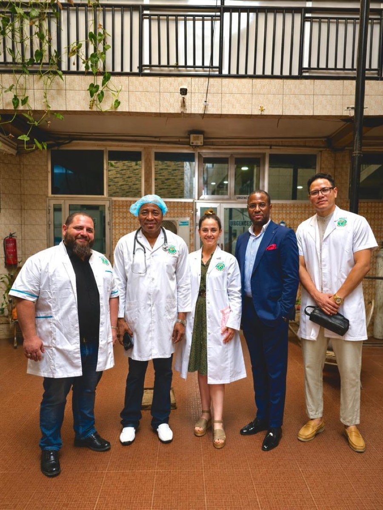

01↗
Médecine générale
Prévention, diagnostic et suivi personnalisé pour toute la famille.
Consultation, suivi, analyses et téléconsultation dans un même parcours — plus clair, plus humain, plus rapide.
Une équipe pluridisciplinaire
Coordonnée autour de votre santé

Votre santé.
Notre priorité.Une prise en charge attentive, à chaque étape.
Nos expertises
Un parcours coordonné, des professionnels disponibles et des services pensés pour réduire l’attente.
Prévention, diagnostic et suivi personnalisé pour toute la famille.
Des prélèvements sur place et des résultats accessibles dans votre espace patient.
Bilans de santé, dépistage et accompagnement à chaque étape de la vie.
Échangez en vidéo avec un praticien, en toute simplicité et confidentialité.
 ● Connexion sécurisée
● Connexion sécurisée12:08
La santé, où que vous soyez
Une consultation vidéo fluide, un parcours guidé et vos documents au même endroit. Depuis votre téléphone ou votre ordinateur.
L’expérience Best Medical Center
Chaque détail est pensé pour que vous sachiez quoi faire, où aller et ce qui vient ensuite.
Votre dossier est prêt
Cabinet 03 · Dr. A. Barry
Selon prescription
Résultats, ordonnance et messagerie
Vous expliquer, vous rassurer et avancer avec vous.
Une équipe à vos côtés
Des professionnels mobilisés autour d’un même objectif : vous proposer une prise en charge claire, coordonnée et respectueuse.
Un premier pas suffit
Choisissez le parcours qui vous convient. Nous nous occupons de la suite.
Prendre rendez-vous
Choisissez un motif pour voir les disponibilités.
Votre créneau
Rendez-vous réservé
Bonjour, Mariama
Dimanche 28 septembre 2026Mon espace santé
Médecine générale
Votre suivi est à jourProchain contrôle conseillé dans 3 mois.
Tension12/8
Dernier bilan18 sept.
Bilan sanguin · 3 documents
Dr. A. Barry · Téléconsultation
Consultation générale
Téléconsultation sécurisée
Cette démo simule la connexion. Aucun flux audio ou vidéo n’est enregistré.
Caméra désactivée
Connexion internetStable · excellente qualité
MicrophonePrêt
CaméraOptionnelle
🔒 Échange chiffré · Vos données restent confidentielles
Connexion du médecin…
Téléconsultation terminée
Le compte rendu et l’ordonnance seront disponibles dans votre espace patient.